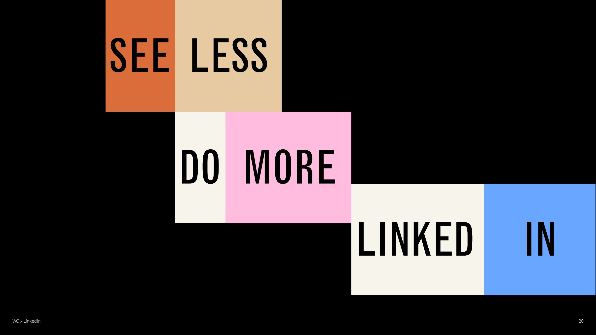
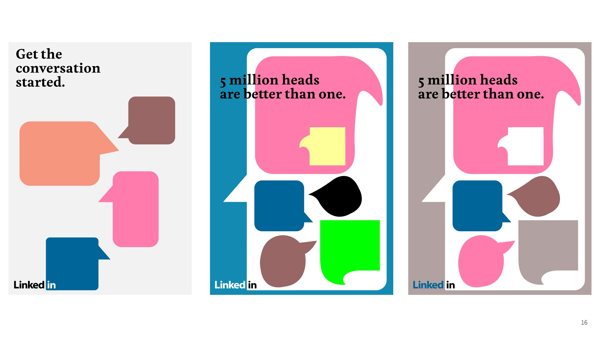
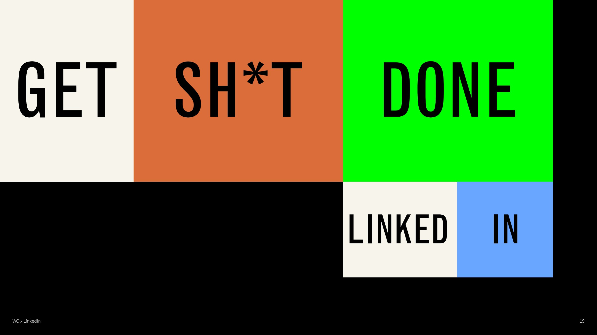
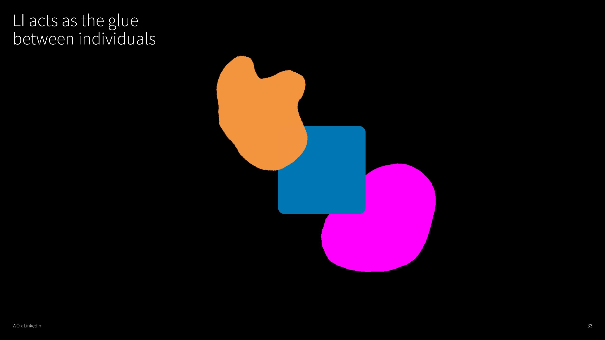
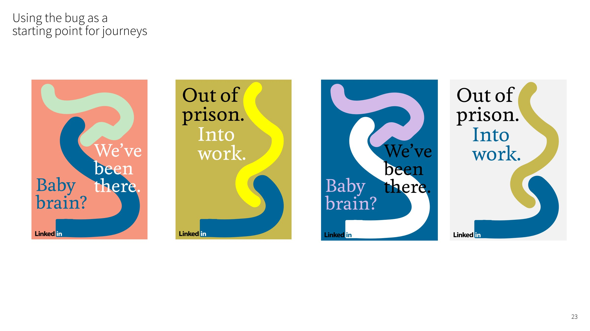
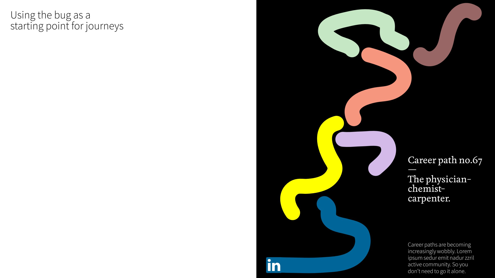

LinkedIn × Wolff Olins
Visual identity exploration and motion studies for LinkedIn's "Project Otis" brand sprint, made in partnership with Wolff Olins.

The problem
Project Otis was a 10-week Wolff Olins sprint to refresh how LinkedIn's brand looks and behaves. The February 2018 sprint deck breaks the brief into three territories (one-to-one, one-to-many, one-to-any) and asks how each could come to life.
The approach
One route treats LinkedIn as "no nonsense": condensed type on blocks of flat color, with lines such as "See less, do more" and "Get sh*t done" locking up with "Linked in". Another uses the "in" bug as a container: speech-bubble shapes for starting conversations, organic forms joined by a blue square to show LinkedIn as the glue between people, and a looping line that traces non-linear career paths.
Those ideas were tested as poster series in a March 2018 thinking deck, from "Get the conversation started" to "Out of prison. Into work." In parallel, the studio produced motion studies of a single dot morphing into squares, overlapping, filling the screen and expressing states such as happy, excited and nervous.





Leadership
Led agency:collective's design and motion exploration for Wolff Olins during the LinkedIn sprint.